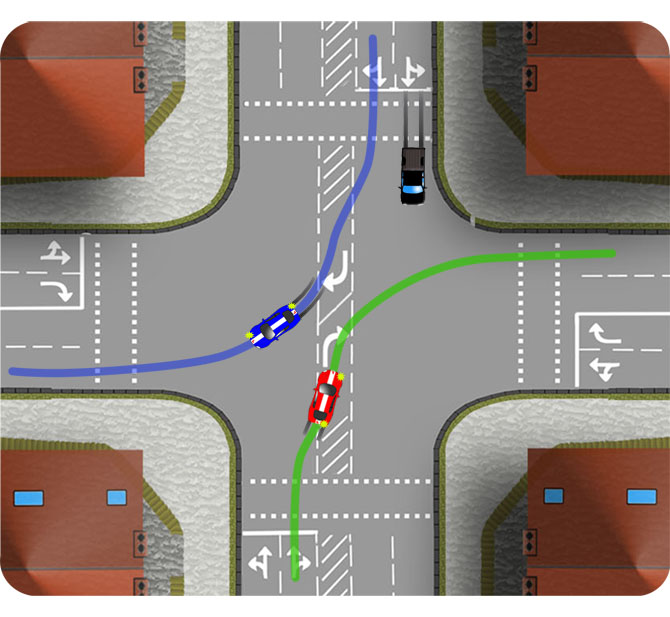
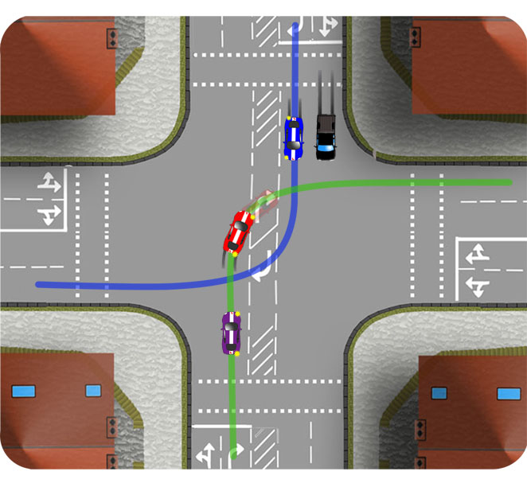
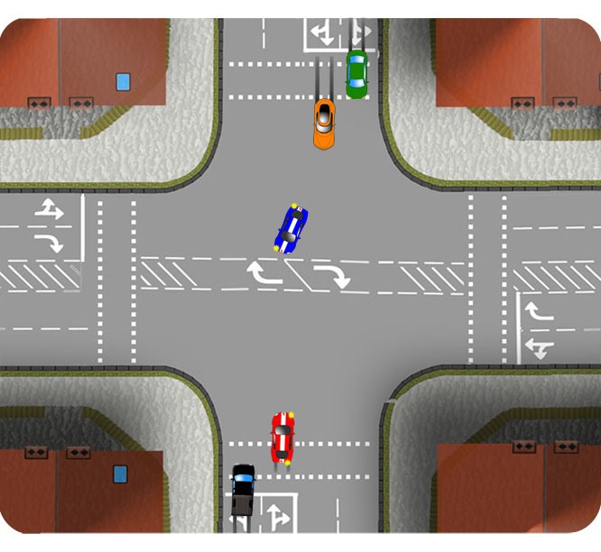

Nearside to Nearside

As you enter onto a traffic light junction to turn right, study the road markings and use the route directed whether you’re proceeding or waiting. The most common scenario is for traffic to pass nearside (left side) to nearside, as at this junction.
Offside to offside

Some junctions are clearly marked for traffic to pass offside (right side) to offside. In the scenario above, the red car allows priority to the blue car. Unable to proceed, the purple car allows a space for the blue car to pass through.
Unmarked

Where there are no road markings in your direction, some discretion may be required. It is usually, most practical to pass nearside to nearside, especially in busy conditions. If there are oncoming right turners, you can always let them take the initiative and choose a route according to their position.
Because there is no turning lane at this junction, the red car must be careful of oncoming traffic and not steer right too early.